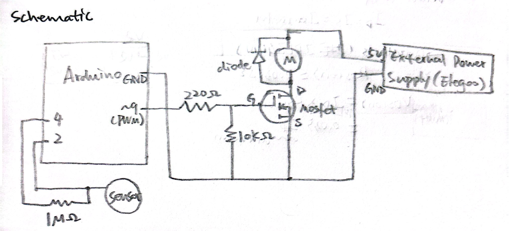
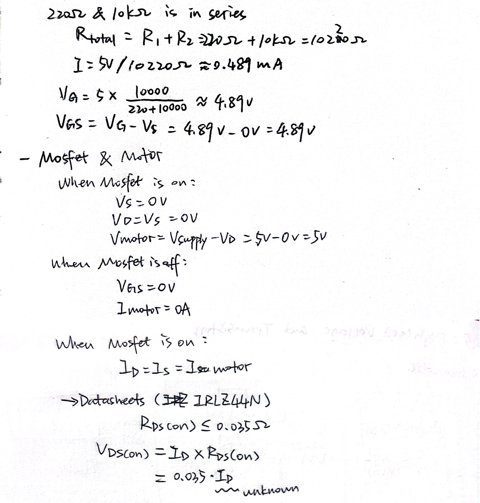
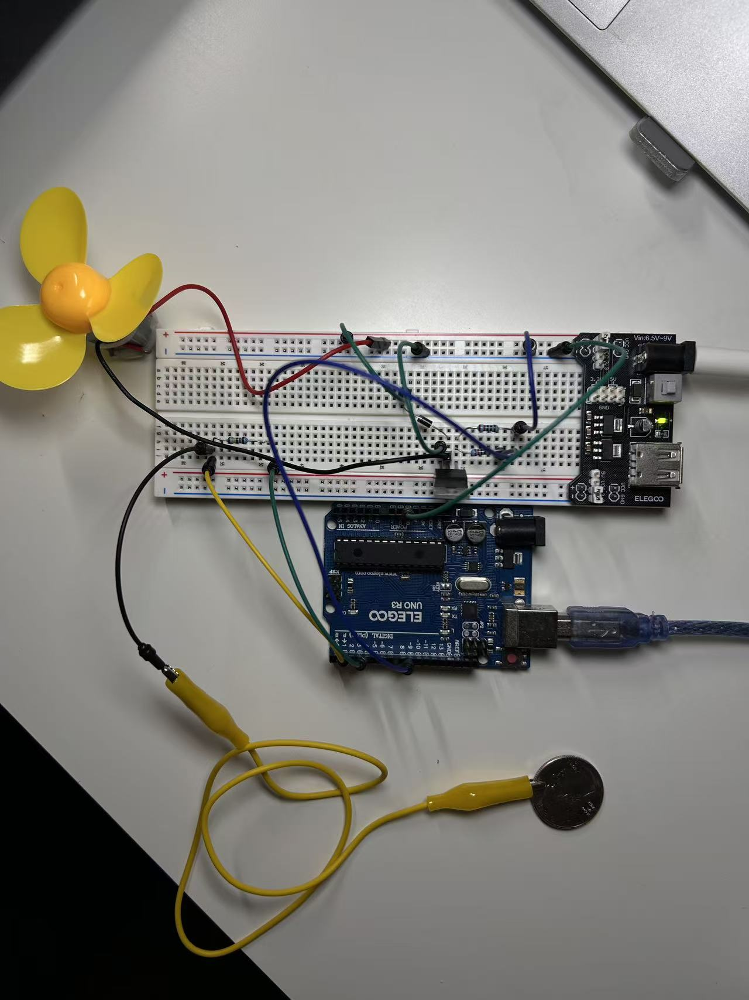
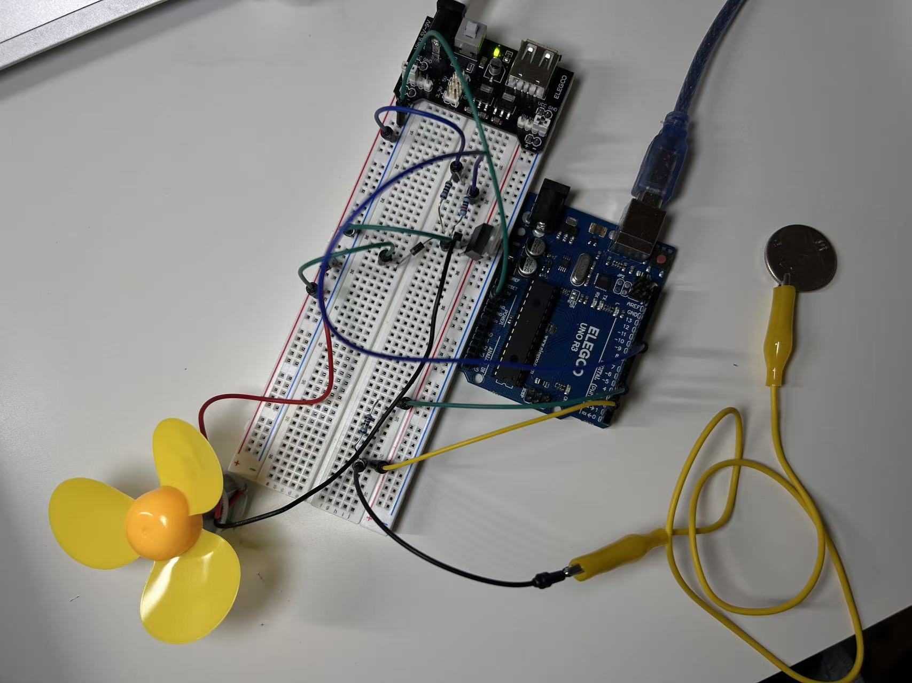
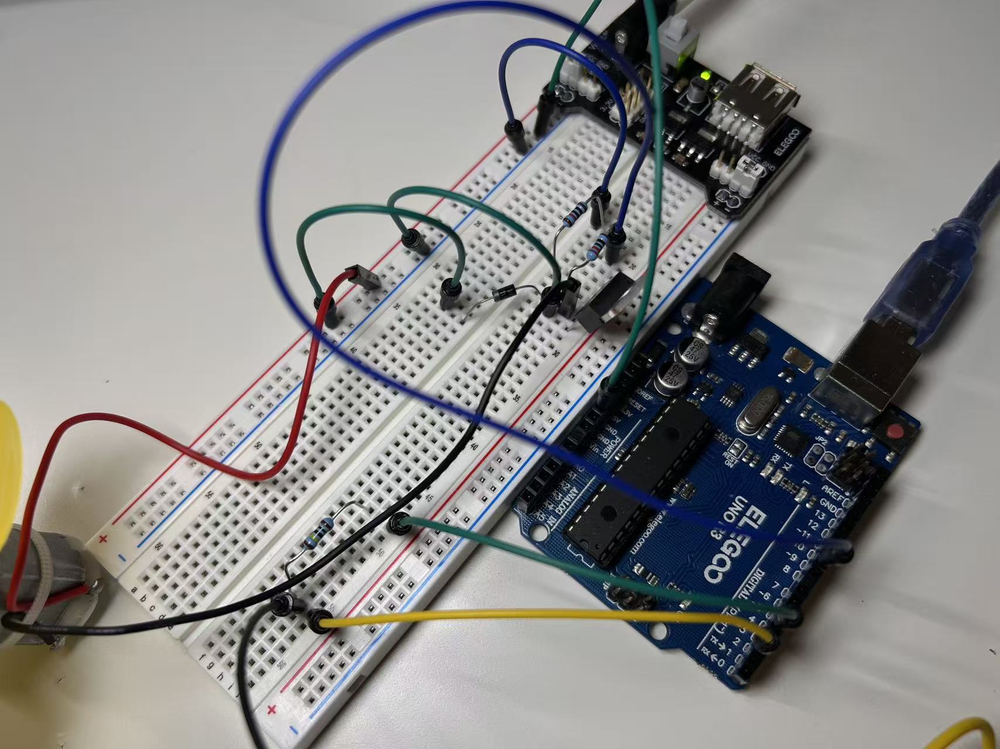
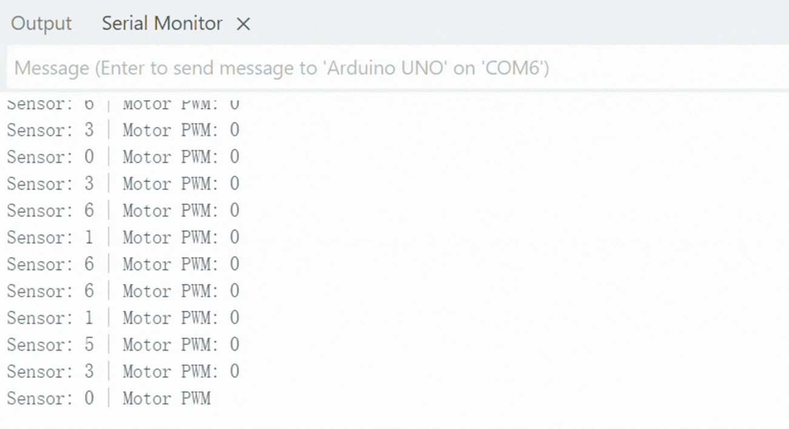
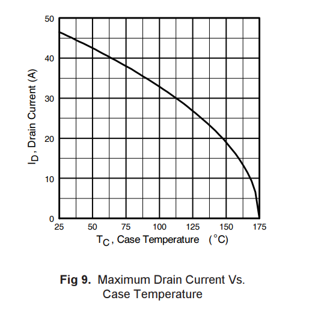

Jiayin Yu's Assignment 5: High(er) Voltage and Transistors!
In this assignment, I built a circuit using a coin as a
capacitive touch sensor and a DC motor as the output.
I used an IRLZ44N N-MOSFET and analogWrite() to control
the motor with PWM. The Arduino is connected to my laptop
and powered through USB, while the motor uses a separate
external 5V power supply. I used the CapacitiveSensor
library to detect touch input.
1. Circuit Schematic & Components

The schematic shows the Arduino Uno, capacitive
touch sensor, IRLZ44N N-MOSFET, DC motor, flyback
diode, resistors, and external 5V power supply.
I used an Arduino Uno, a coin as a capacitive touch
sensor, an IRLZ44N N-MOSFET, a 3-6V DC motor,
a flyback diode, three resistors, and an external
5V power supply.
The coin is connected to Pin 2, with a 1MΩ resistor
between Pins 4 and 2. Arduino Pin 9 connects to the
MOSFET Gate through a 220Ω resistor, with a 10kΩ
pull-down resistor connected to GND.
The MOSFET Drain connects to the motor's negative
terminal, and the Source connects to GND. The motor's
positive terminal connects to the external 5V supply.
A flyback diode is connected across the motor,
with its cathode connected to 5V and its anode
connected to the MOSFET Drain.
Resistor Selection
1MΩ resistor:
Increases the RC charging time to make touch
easier to detect.
220Ω resistor:
Limits the temporary current flowing into
the MOSFET Gate.
10kΩ resistor:
Keeps the Gate LOW when the Arduino is not
driving it, preventing the motor from
turning on unexpectedly.
Voltage and Current Calculations

Handwritten calculations for the expected
voltages and currents in the circuit.
Based on my calculations, the MOSFET Gate voltage
is approximately 4.89V when Pin 9 is HIGH.
When the MOSFET is ON, the motor receives
approximately 5V. When it is OFF, the
steady-state motor current is approximately 0A.
The MOSFET Drain current equals the motor current,
which depends on the motor's load.
MOSFET Current
I used a 3-6V DC motor powered by an external 5V
supply. The MOSFET Drain current equals the motor
current when it is ON. The exact current depends
on the motor and its load, so it cannot be
calculated from the motor's voltage rating alone.
2. Circuit & Operation



The completed circuit includes an Arduino Uno,
a coin capacitive touch sensor, an IRLZ44N
N-MOSFET, a DC motor, and an external
power supply.
Circuit Implementation
I powered the Arduino through USB and used an
external 5V Elegoo module for the motor.
The Arduino and external supply share a common GND,
but their 5V outputs are not connected.
The IRLZ44N works as a low-side switch.
I added a flyback diode to protect the circuit
from voltage spikes.
Capacitive Touch Sensor
I used the CapacitiveSensor library to measure
changes in capacitance. Pin 4 is the send pin,
and Pin 2 is the receive pin connected to the coin.
When I touch the coin, the Arduino detects the change.
Circuit Operation
When the sensor reading is above 100,
constrain() and map() convert it to a PWM value
between 180 and 255. Otherwise, the PWM output is 0.
Arduino Pin 9 sends the PWM signal to the
MOSFET Gate to control the motor.

The GIFs show how touching the coin controls
the DC motor through the MOSFET using PWM
signals from Arduino Pin 9.
3. Arduino Code
// Include the capacitive sensing library.
#include <CapacitiveSensor.h>
// Create a capacitive sensor using D4 and D2.
CapacitiveSensor touchSensor(4, 2);
// Define the PWM pin controlling the motor.
const int motorPin = 9;
// Run the setup function once.
void setup() {
// Set the motor output latch to LOW.
digitalWrite(motorPin, LOW);
// Configure D9 as OUTPUT, initially LOW.
pinMode(motorPin, OUTPUT);
// Start serial communication at 9600 baud.
Serial.begin(9600);
}
// Repeat the loop continuously.
void loop() {
// Read the capacitive sensor using 30 samples.
long sensorValue = touchSensor.capacitiveSensor(30);
// Set the default motor speed to zero.
int motorSpeed = 0;
// Check whether the sensor reading exceeds 100.
if (sensorValue > 100) {
// Limit the reading and map it to PWM 180-255.
motorSpeed = map(
constrain(sensorValue, 100L, 1000L),
100, 1000, 180, 255
);
}
// Send the PWM signal to the MOSFET Gate.
analogWrite(motorPin, motorSpeed);
// Print the sensor reading label.
Serial.print("Sensor: ");
// Print the sensor reading.
Serial.print(sensorValue);
// Print the PWM label.
Serial.print(" | Motor PWM: ");
// Print the PWM value.
Serial.println(motorSpeed);
// Wait 50 milliseconds.
delay(50);
}
I used the CapacitiveSensor library to read the touch
sensor and map() and constrain() to calculate the motor
speed. Then, analogWrite() sends a PWM signal
through Pin 9.
I set Pin 9 LOW before setting it to OUTPUT,
so the motor starts OFF.
4. Additional Questions
Question 1: MOSFET Maximum Current
I used the IRLZ44N N-channel MOSFET.
According to its datasheet, the maximum continuous
Drain current between Pin 2 (Drain) and Pin 3 (Source)
is 47A at a case temperature of 25°C and VGS = 10V.
The maximum current decreases as the
case temperature increases.

The IRLZ44N datasheet shows that the maximum
Drain current decreases as the case
temperature increases.
A DC motor circuit using an Arduino Uno,
an IRLZ44N N-MOSFET, a flyback diode,
two resistors, and an external 5V power supply.
I designed a circuit using an Arduino Uno,
an IRLZ44N N-MOSFET, a DC motor, a flyback diode,
two resistors, and an external 5V power supply.
Arduino Pin 9 controls the MOSFET through a 220Ω
resistor, while a 10kΩ pull-down resistor keeps
the Gate LOW when it is not being driven.
The flyback diode is connected across the motor,
with its cathode connected to 5V and its anode
connected to the MOSFET Drain. It protects the
circuit from voltage spikes when the motor turns off.
A circuit using an Arduino Uno, an L293D
motor driver, two DC motors, and an external
5V motor power supply.
I designed a circuit using an Arduino Uno,
an L293D motor driver, two DC motors,
and an external 5V power supply.
The L293D controls the direction of both motors.
Pin 16 (VCC1) connects to Arduino 5V for logic power,
while Pin 8 (VCC2) connects to the external 5V supply
for the motors. All four GND pins share
a common ground.
Motor A connects to output Pins 3 and 6,
while Motor B connects to output Pins 11 and 14.
By changing the HIGH and LOW signals on the
input pins, I can make each motor rotate
forward or backward.
Pseudocode
// Set Motor A control pins as OUTPUT.
pinMode(5, OUTPUT);
pinMode(6, OUTPUT);
pinMode(7, OUTPUT);
// Set Motor B control pins as OUTPUT.
pinMode(8, OUTPUT);
pinMode(9, OUTPUT);
pinMode(10, OUTPUT);
// Enable both motors.
digitalWrite(7, HIGH);
digitalWrite(8, HIGH);
// Move both motors forward.
digitalWrite(6, HIGH);
digitalWrite(5, LOW);
digitalWrite(9, HIGH);
digitalWrite(10, LOW);
// Wait one second.
delay(1000);
// Move both motors backward.
digitalWrite(6, LOW);
digitalWrite(5, HIGH);
digitalWrite(9, LOW);
digitalWrite(10, HIGH);
// Wait one second.
delay(1000);
// Move Motor A forward and Motor B backward.
digitalWrite(6, HIGH);
digitalWrite(5, LOW);
digitalWrite(9, LOW);
digitalWrite(10, HIGH);
// Wait one second.
delay(1000);
// Move Motor A backward and Motor B forward.
digitalWrite(6, LOW);
digitalWrite(5, HIGH);
digitalWrite(9, HIGH);
digitalWrite(10, LOW);
// Wait one second.
delay(1000);
The pseudocode uses Arduino Pins 7 and 8
to enable the motors. Pins 6 and 5 control
Motor A, while Pins 9 and 10 control Motor B.
Changing the input signals between HIGH
and LOW changes each motor's direction.
I used ChatGPT to understand how the IRLZ44N
MOSFET works, how to connect the flyback diode,
and how to choose suitable resistor values
to protect the circuit.
When my motor did not rotate, I also used AI
to troubleshoot the connections and check
my Arduino code.
I built the circuit myself, tested the connections,
drew the schematic, used the CapacitiveSensor library,
checked my code logic, and researched
the component datasheets.
This experience reminded me that AI can help me
understand problems and find possible solutions,
but I still need to test and verify them myself.
AI Conversation Transcripts
The following are summaries of five discussions
I had with ChatGPT while completing this assignment.
1. Understanding the MOSFET
Question:
How does the IRLZ44N MOSFET work,
and why do I need it?
AI Discussion:
I learned how the MOSFET works as a switch
and allows Arduino PWM signals to control
a DC motor powered by an external supply.
2. Connecting the Flyback Diode
Question:
Why does a DC motor need a flyback diode,
and how should I connect it?
AI Discussion:
We discussed voltage spikes caused by the motor
and how to connect the diode correctly,
with its cathode toward 5V.
3. Choosing Resistor Values
Question:
Why should I use 220Ω and 10kΩ resistors
with the MOSFET Gate?
AI Discussion:
I learned that the 220Ω resistor limits temporary
Gate current, while the 10kΩ pull-down resistor
keeps the MOSFET OFF when the Gate is not driven.
4. Troubleshooting the Motor
Question:
My motor does not rotate. How can I fix it?
AI Discussion:
AI helped me check the external power supply,
common ground, MOSFET connections, and motor wiring.
I tested the motor and circuit myself.
5. Reviewing Arduino Code
Question:
Can I simplify my Arduino code while keeping
the same behavior?
AI Discussion:
We reviewed the CapacitiveSensor library,
analogWrite(), map(), and constrain().
I simplified the code while keeping the
same sensor thresholds and PWM output.